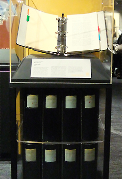

Loading
Early Multics Development and the MSPM

MSPM on display at the MIT Museum MIT150 exhibit in 2011. Photo by Dave Walden. Click for a larger view. More photos by Chris Devers on Flickr.
From 1965 to about 1969, the Multics development team at MAC, GE, and BTL wrote the Multics System Programmers' Manual (MSPM). It was intended to be the primary design document for Multics. It was about 3000 pages; every section went through serious peer review and many sections were rewritten or deeply revised several times.
While waiting for the PL/I compiler to become available in 1965 and 1966, the team designed Multics and documented the design in the MSPM, which grew to over 800 sections and about 3000 pages.
The MSPM contained functional requirements, high-level design, and implementation plans for Multics. When we actually started building and integrating the system, we discovered that some of the MSPM designs were far too complex. Simpler, more efficient facilities were built instead, sometimes as interim measures intended to evolve into the full design eventually, and sometimes as recognition that the original plan attempted too much. The MSPM was updated to reflect some of the early redesigns, but quickly got behind.
Section numbers of the MSPM begin with B, like "BA.1."
This is homage to the  CTSS manual, the CTSS Programmer's Guide, whose second edition's sections all begin with A.
CTSS manual, the CTSS Programmer's Guide, whose second edition's sections all begin with A.
Much of the MSPM is science fiction, describing features that might work one day in the future; some were never done. (One early I/O System design section mentioned the "on-line peripheral oil well.") Other parts of it provided high level functional specs for cool facilities we never did have time to build, e.g. the reserver. Other parts had low-level PL/I declarations of code that might or might not compile. In modern terms, the MSPM was a kind of requirements document, describing what Multics should do once built, intermixed with internal design documents specifying how to build the functions.
It is important to understand that the MSPM writing exercise was a step toward Multics, and that almost none of the design in the MSPM was implemented as written. But we would not have had as good a system without it: the MSPM represented an innovation in Process, a balance between formality, writing things down, peer review and imprecision, detail hiding, leaving specifics till later.
MSPM sections were handwritten by programmers, and then typed by secretaries on hectograph masters. Blue hectograph copies of a document were unapproved, and provisional. After design review, the official versions of documents were retyped on paper tape using Friden 2201 Flexowriters, proofread by the programmers, and then the paper tapes were used to produce mimeograph masters. Official versions of documents had black ink. CTSS was not used for system documentation, because it was too expensive. Xerography was not used for reproduction because it was expensive and unreliable. The Flexowriter tapes appear to have been discarded.
As sections were produced, they were distributed to every member of the project team. The MSPM occupied ten or twelve four-inch three-ring binders, more than one shelf of a standard office bookcase. Just keeping up with filing the updates took substantial time. As a result, each person's copy of the MSPM may have some variations.
The table below does not include section BS, System Module Abstracts. That section consisted of one-page writeups for actual code as we really began building and integrating the system in 1966-68. The idea was that we would update the MSPM as we actually wrote code, to produce a system and documentation that matched it. We fell behind rapidly. Management insisted that we at least have a one-page abstract for everything in the system, and that may have been true for a short time.
There is a Chart showing how many sections each author contributed to.
The table below is derived from data provided by the The Multics History Project. When they had multiple scans of the same section, I chose the last one. In the case of sections that got renamed, this may have caused some duplicates.
The copy of the MSPM that was scanned is the one that was found on Prof. Jerry Saltzer's bookshelf in the spring of 2006. Since the MSPM was a frequently-updated loose-leaf notebook there is no reason to believe that this copy is identical to any other copy, but since Jerry acted as the editor of the MSPM it is probably as authoritative as any version to be found.
Thanks to Eric Swenson, this copy is now available online. Thanks to Paul McJones for adding OCR text to the PDF files.
In September 2018, the MIT-Multics Archives were donated to the now-defunct Living Computer Museum in Seattle. This includes 11 boxes of tapes, 58 boxes of Multics and CTSS documentation and listings, and a handful of miscellaneous items. We have no information about where this information is now.
Table of Contents
- BA.1 MSPM - General Information, 07/26/68, F. J. Corbato, A. L. Dean, P. G. Neumann, M. A. Padlipsky
- BA.2 Summary of Multics Technical Policy, 07/23/65, E. L. Glaser, P. G. Neumann
- BA.3.00 Documentation Conventions, 05/19/66, P. A. Crisman, F. J. Corbato
- BA.4 Flexowriter Specifications for Multics Documentation, 09/09/66, L. L. Selwyn
- BA.5 MSPM Publication Procedures, 07/26/68, M. A. Padlipsky
- BB.2 System Module Interfaces (PL/I Subset for System Programming), 06/24/66, R. M. Graham
- BB.2.01 EPL Subset for System Programming, 01/31/69, R. M. Graham, R. C. Daley
- BB.2.02 Multics Standard Data Types, 02/09/68, R. M. Graham
- BB.3.01 Multics Standard Magnetic Tape Format, 03/03/67, J. Crawford Noll, R. C. Daley, J. H. Saltzer
- BB.3.02 Multics standard card punch codes and Relation between ASCII and EBCDIC, 03/30/67, J. H. Saltzer
- BB.5.00 Multics Name Registry, 05/08/67, R. M. Graham
- BB.5.01 Reserved Segment Name Suffixes, 03/27/68, R. M. Graham
- BB.5.01a Addendum to Reserved Segment Name Suffixes, 07/10/68, R. M. Graham
- BB.5.02 Reserved External Symbols, 03/30/67, R. M. Graham
- BB.5.03 Software Simulated Faults, 06/07/67, R. M. Graham, R. L. Rappaport
- BB.5.04 Reserved Option Names, 05/09/67, R. M. Graham
- BB.5.05 Fault Assignment, 02/15/67, R. M. Graham
- BB.5.06 Segment Registry, 11/21/68, M. A. Padlipsky, R. M. Graham
- BB.5.06a Appendix to BB.5.06, 11/21/68, M. A. Padlipsky
- BB.5.06b Corrigenda, BB.5.06, 05/17/68, M. A. Padlipsky
- BB.5.07 Reserved Stream Names, 11/01/66, R. M. Graham
- BB.5.08 Reserved Condition Names, 07/26/67, R. M. Graham
- BB.5.08a Addendum, BB.5.08, 08/04/67, R. M. Graham
- BB.6.01 645 Multics Standard Checksum Procedure, 06/02/67, N. I. Morris
- BB.6.02 Access to Temporary Segments, 02/02/68, C. M. Marceau
- BB.6.03 Standard Call Brackets, 04/04/68, M. A. Padlipsky
- BB.6.04 Hardware Features to Avoid, 06/05/68, J. H. Saltzer
- BC.1.01 Minimum Configurations and Configuration Restrictions for Multics Operation on the GE-645, 03/08/68, J. H. Saltzer
- BC.1.02 Major Module Port Assignment, 11/25/66, Harlow E. Frick, J. H. Saltzer
- BC.1.04 Interrupt Cell Assignment, 11/21/67, J. H. Saltzer, Harlow E. Frick
- BC.2.00 Introduction: Character Input/Output for Multics, 04/14/67, J. H. Saltzer, F. J. Corbato, J. F. Ossanna
- BC.2.01 Character Set, 09/25/68, F. J. Corbato, R. Morris
- BC.2.01a Addenda to BC.2.01, 09/03/68, R. M. Graham
- BC.2.02 On the Interpretation of ASCII Character Streams within Multics, 01/27/66, J. H. Saltzer, Christopher Strachey
- BC.2.03 Erase and Kill Character Conventions, 01/27/66, J. H. Saltzer, Christopher Strachey
- BC.2.04 Character Escape Conventions, 02/06/68, F. J. Corbato, Robert Morris, J. H. Saltzer
- BC.2.05 Requirements for Device Interface Module Specifications, 01/02/66, J. H. Saltzer
- BC.2.06 BB.2.06 superseded by BB.3.02, 04/13/67, R. M. Graham
- BC.3.00 Purpose of Hardware Deficiency Documentation, 03/08/66, J. H. Saltzer
- BC.3.01 Processor Tag, 03/08/66, J. H. Saltzer
- BC.3.03 Processor Interval Timer Fault Inhibition, 12/29/67, J. H. Saltzer
- BC.3.04 System Controller Addressing, 10/02/67, J. H. Saltzer
- BC.3.05 Slave Mode Control Field Loading, 12/29/67, J. H. Saltzer
- BC.3.08 Slave Mode Parity Masking, 12/29/67, J. H. Saltzer
- BC.3.09 Associative Memory Clear Function, 02/07/68, J. H. Saltzer
- BC.4.01 System Initialization and Bootload, 06/30/67, A. Bensoussan
- BC.4.02 Multics Standard GIOC Channel Assignments, 04/12/68, Izhar Shy
- BC.5.00 Local Configuration Specification, 04/16/69, J. H. Saltzer
- BC.5.01 Local Major Module Configuration, 04/16/69, J. H. Saltzer
- BC.5.02 Interrupt Cell Assignment Assumed by Multics, 04/16/69, J. H. Saltzer
- BD.1.00 Standard Format for the Segment Symbol Table, 02/17/67, D. B. Wagner
- BD.1.00a Revision of BD.1.00, 06/19/68, R. M. Graham
- BD.1.02 The Segment Symbol Table Produced by the PL/I Translator, 02/21/67, D. B. Wagner
- BD.1.02a Additions to the PL/I Segment Symbol Table, 06/15/67, D. B. Wagner
- BD.10.01 Clock Services Provided by the Supervisor, 02/28/66, J. H. Saltzer
- BD.10.02 Clock Conversion Routines, 03/04/66, A. Evans
- BD.10.03 Calendar Clock Wakeup Management, 11/01/66, J. H. Saltzer, T. H. Van Vleck
- BD.2.00 Standard Format for the Segment Symbol Table, 07/11/66, D. B. Wagner
- BD.2.01 Binding Information and Format, 03/27/68, R. M. Graham, J. D. Mills, R. H. Thomas
- BD.3.00 Segment Management Module (SMM) - Overview, 04/05/67, S. L. Rosenbaum
- BD.3.01 Segment Name Table (SNT), 05/04/67, S. L. Rosenbaum
- BD.3.02 Segment Management Module Primitives, 05/05/67, S. L. Rosenbaum
- BD.3.05 Summary of Calls to the Segment Management Module, 12/20/67, S. L. Rosenbaum
- BD.4.00 Search Module Overview, 03/24/67, S. L. Rosenbaum
- BD.4.05 Interim Search Module, 01/03/67, S. L. Rosenbaum
- BD.4.05a Appendix for BD.4.05, 01/03/67, S. L. Rosenbaum
- BD.6.02 System Skeleton, 04/22/68, H. J. Hebert, J. H. Saltzer
- BD.6.02a Correction to BD.6.02, 05/09/68, C. M. Marceau
- BD.6.03 Hard-Core Supervisor Entry Points, 04/06/67, J. H. Saltzer
- BD.6.09 Process Directories, 09/27/67, C. M. Marceau
- BD.6.10 Process-Group Directories, 11/17/67, C. M. Marceau
- BD.6.11 The Segment "process_info", 12/08/67, A. Evans
- BD.7.00 Overview of the Intersegment Linkage, 09/29/67, R. M. Graham, M. A. Padlipsky
- BD.7.01 Linkage Section, 02/12/68, R. M. Graham
- BD.7.01a Correction to BD.7.01, 02/20/68, R. M. Graham
- BD.7.02 CALL, SAVE, RETURN Sequences for Ordinary Slave Procedures, 06/30/67, R. M. Graham
- BD.7.03 CALL, SAVE, RETURN Sequences for Execute-Only and Master Mode Procedures, 07/14/67, R. M. Graham
- BD.7.03a Errata, BD.7.03, 01/15/68, R. M. Graham, N. Adleman
- BD.7.04 link_fault, 11/17/67, D. L. Boyd, D. H. Johnson
- BD.7.05 Combined Linkage Segments, 02/05/68, R. C. Daley, M. A. Padlipsky
- BD.7.06 Short Call/Save/Return, 12/13/68, R. M. Graham
- BD.8.00 Standard Error-handling Practice, 03/14/69, M. A. Padlipsky, F. J. Corbato
- BD.8.01 crash, 08/27/68, M. R. Thompson
- BD.8.02 terminate_proc, 08/27/68, M. R. Thompson
- BD.8.03 terminate_process, 08/27/68, M. R. Thompson
- BD.8.04 crawl_out, 10/15/68, S. H. Webber
- BD.8.05 crock, 10/17/68, S. H. Webber
- BD.9.00 Overview of the Multics Protection Mechanism, 06/27/67, R. M. Graham, M. A. Padlipsky
- BD.9.01 gatekeeper: gate$in, gate$out, gate$switch, 02/20/67, R. M. Graham, M. A. Padlipsky
- BD.9.01a Corrigenda, BD.9.01, 07/12/67, R. M. Graham, M. A. Padlipsky
- BD.9.02 Outward Call Argument Management: arg_pull, arg_push, 05/03/67, R. M. Graham, M. A. Padlipsky
- BD.9.03 validate_arg, 06/05/67, R. M. Graham, M. A. Padlipsky
- BD.9.04 Condition Handling in Multics: condition, reversion, signal, set_default, find_condition, 12/15/67, R. M. Graham, M. A. Padlipsky, J. M. Grochow
- BD.9.04a Corrigenda, BD.9.04, 08/04/67, R. M. Graham, M. A. Padlipsky, J. M. Grochow
- BD.9.05 Abnormal Returns: The unwinder, 06/30/67, R. M. Graham, M. A. Padlipsky
- BD.9.06 Current ring number routine: get_ring_no, 06/05/67, R. M. Graham, M. A. Padlipsky
- BD.9.08 xchsz, 07/02/68, Mary C. Turnquist
- BD.9.09 makestack, 07/08/68, D. D. Clark, M. R. Thompson
- BE.1.01 Use of the EPL Compiler in CTSS, 11/04/67, A. Evans
- BE.1.02 Processing EPL "macros" with EPLMAC, 01/05/67, A. Evans
- BE.1.03 Print the three files created by an EPL compilation, 07/13/66, A. Evans
- BE.1.04 EPL Compilations on CTSS FIB: EPLFIB SAVED, 07/05/66, C. C. Garman
- BE.10.00 The Elementary File System (EFS), 05/10/66, D. A. Levinson
- BE.10.01 Elementary File System (EFS), 06/10/66, D. A. Levinson, L. B. Ratcliff
- BE.10.02 Elementary File System Print Routines, 06/30/66, L. B. Ratcliff
- BE.10.03 Foreign Files (EFS), 06/28/66, L. B. Ratcliff
- BE.11.00 On-Line Character Stream Input/Output for Interaction with Simulated 645 Programs, 12/21/66, David H. Slosberg, N. I. Morris
- BE.12.01 Trace and Dump for EPL procedure debugging in the 645 simulator environment, 04/08/66, John A. Ridgeway
- BE.12.02 Strace: A subroutine tracing procedure for 6.36, 11/10/67, D. B. Wagner
- BE.12.03 Stack Dumping in the 64.5 Pseudo-process <stack_dump>, 04/12/68, Gerald S. Stoller
- BE.13 GE 645 Core Memory X-Ray Program, 01/22/66, D. J. Edwards
- BE.15.01 Multics Bootload Simulator (MBS), 02/28/67, Van Binh Nguyen
- BE.15.02 Multics System Tape Generator, 04/25/67, Van Binh Nguyen
- BE.16 Use of the Binder under 6.36, 05/03/68, J. M. Grochow, N. I. Morris
- BE.16.01 Return A Segment to CTSS from a 6.36 Execution Activity: write_seg, 07/17/68, J. M. Grochow
- BE.16.01a Addenda, BE.16.01, 10/30/68, B. L. Wolman
- BE.17.01 A User's Manual for the (Interim) Tape System Process, 07/25/68, D. L. Stone
- BE.17.02 The tape_daemon control file, 07/24/68, D. L. Stone
- BE.17.04 tape_daemon, 07/22/68, D. L. Stone
- BE.17.05 td_readbcd, 07/08/68, T. P. Skinner
- BE.17.06 td_read7, 07/08/68, T. P. Skinner
- BE.17.07 td_writebcd, 07/08/68, T. P. Skinner
- BE.17.08 td_write7, 07/08/68, T. P. Skinner
- BE.17.09 td_write14, 07/08/68, T. P. Skinner
- BE.17.10 td_write27, 07/08/68, T. P. Skinner
- BE.17.11 td_file, 07/22/68, D. L. Stone
- BE.17.12 td_input, 07/22/68, D. L. Stone
- BE.17.13 td_getfile, 07/22/68, D. L. Stone
- BE.17.14 tdsm_r, 07/24/68, D. L. Stone
- BE.17.15 tdsm_w, 07/22/68, T. P. Skinner
- BE.17.16 tdsm_a, 07/24/68, D. L. Stone
- BE.17.17 td_dsm, 07/22/68, D. L. Stone
- BE.17.18 ascii_gebcd, 08/19/68, T. P. Skinner
- BE.17.21 An ASCII File Scanner, 06/18/68, D. L. Stone
- BE.18.00 The merge_edit command, 09/19/68, E. W. Meyer
- BE.18.00a Appendix to BE.18.00, 07/24/68, E. W. Meyer
- BE.18.01 The merge_edit command - Implementation, 09/19/68, E. W. Meyer
- BE.3 645 Segment Dump, 06/15/67, J. W. Gintell
- BE.5.00 Overview of the 6.36 System, 02/08/66, D. E. Joel
- BE.5.01 Introduction to GECOS, 02/10/66, R. R. Fenichel
- BE.5.02 Merge-editor, 10/27/67, B. W. Kernighan, N. I. Morris, Judith W. Spall
- BE.5.03 Error Message Generator, 02/18/66, David H. Slosberg
- BE.5.04 6.36 Dumper, 06/14/66, D. E. Joel
- BE.5.05 GIOC Interface Module Debugging Aids in 6.36, 01/24/68, D. L. Stone
- BE.5.06 GEBUG, 03/02/66, D. B. Wagner
- BE.5.06a Addendum to BE.5.06: Changes to GEBUG, 05/22/67, D. B. Wagner
- BE.5.07 ASCII-Format File Editor (EDA), 12/09/66, Robert Morris, J. H. Saltzer
- BE.5.08 Use of the EPL Compiler in CTSS, 04/08/66, A. Evans
- BE.5.09 Operators Guide to the 6.36, 10/29/65, R. R. Fenichel
- BE.5.10 Print an ASCII File on the User's Console: PRINTA SAVED, 03/11/66, A. Evans
- BE.5.11 RQASCI: Request off-line printing of ASCII files, 06/23/66, T. H. Van Vleck
- BE.5.12 Special Segment Generation (MAKETL), 03/31/67, D. R. Widrig
- BE.5.13 JOIN SAVED -- Join two or more ASCII Files, 03/30/67, A. Evans
- BE.5.14 Print out links in text and link file: PRLNK SAVED, 11/17/67, T. H. Van Vleck, D. R. Widrig
- BE.5.15 The Usage of gecos_seg under 6.36, 01/17/69, E. W. Meyer
- BE.6.00 Overview of the 64.5 System, 08/16/66, D. E. Joel
- BE.6.01 64.5 Driver, 07/06/66, D. E. Joel
- BE.6.02 645 Dumper, 03/10/66, Van Binh Nguyen
- BE.6.04 Source Cards to CTSS Disc Editor Input Tape, 09/27/66, Sheila Turbiner
- BE.7.00 Overview of the pre-Multics System, 06/09/67, Gerald S. Stoller
- BE.7.01 Initializer, 03/02/66, D. E. Joel
- BE.7.04 EPLBSA In the GECOS Environment, 03/05/68, J. D. Mills
- BE.7.05 Packer, 03/02/66, J. Meyers
- BE.7.06 Marker, 02/25/66, D. E. Joel
- BE.7.07 Loader, 12/09/66, W. S. Bartlett
- BE.7.07a Appendix to BE.7.07: Changes in the 645 Loader, 06/18/68, Gerald S. Stoller, J. D. Mills
- BE.7.08 Simulator, 03/09/66, G. G. Ziegler
- BE.7.08a Appendix to BE.7.08: Format of the Core Dump File, 05/18/67, N. I. Morris, D. B. Wagner
- BE.7.10 645 Simulator Escape, 11/02/66, D. E. Joel
- BE.7.11 645 Segment Library Editor, 10/25/66, D. E. Joel
- BE.7.12 Execution Environment for the GE-645 Pseudo-Process, 02/07/67, Van Binh Nguyen, D. E. Joel, David H. Slosberg, Gerald S. Stoller
- BE.7.13 Shared use of the GIOC in a 645 Pseudo-Process, 01/10/68, Gerald S. Stoller, M. A. Padlipsky
- BE.7.14 Obtaining Entry Usage Counts, 08/28/68, B. L. Wolman
- BE.7.15 Merge-Editor for Performing Multics Segment Library Edits: LIBEDT, 12/09/68, N. I. Morris
- BE.8.00 Overiew of the Pseudo-supervisor, 10/13/66, D. H. Johnson
- BE.8.01 Linker for the Pseudo-supervisor, 10/13/66, D. H. Johnson, D. L. Boyd
- BE.8.02 Page Management for the Pseudo-supervisor, 10/13/66, D. H. Johnson
- BE.8.03 Segment Management for the Pseudo-supervisor, 10/13/66, D. H. Johnson
- BE.8.04 Linkage building for ordinary slave procedures in the pseudo-supervisor, 10/13/66, D. H. Johnson
- BE.8.05 Pseudo-Process Initialization, 07/24/67, Gerald S. Stoller
- BE.9 Use of the Multics Linker (link_fault): ft2ft3, setft3, f3catc, 06/05/67, N. Adleman, D. L. Boyd
- BF.0 Overview of the I/O System, 12/28/66, V. A. Vyssotsky, J. L. Bash
- BF.1.00 Overview of I/O System User Calls, 08/14/67, P. G. Neumann
- BF.1.01 Attachment and Detachment of Input/Output Devices and Pseudodevices, 09/19/66, J. F. Ossanna, V. A. Vyssotsky, G. G. Ziegler
- BF.1.02 I/O System Modes and Device-Mode Relationships, 04/21/67, J. F. Ossanna
- BF.1.04 User Control of Program-Device Synchronization, 03/01/67, J. F. Ossanna
- BF.1.05 Code Conversion, 08/14/67, E. L. Ivie, D. L. Stone
- BF.1.07 I/O System Status Reporting: Basic Format and Implementation, 08/08/68, J. F. Ossanna
- BF.1.10 Frames, Items, and the Current Item Number, 08/31/66, J. F. Ossanna, V. A. Vyssotsky, G. G. Ziegler
- BF.1.11 Linear Frames, 08/31/66, J. F. Ossanna, V. A. Vyssotsky, G. G. Ziegler
- BF.1.12 Sequential Linear I/O, 08/31/66, J. F. Ossanna, V. A. Vyssotsky, G. G. Ziegler
- BF.1.13 Random Linear I/O, 08/31/66, J. F. Ossanna, V. A. Vyssotsky, G. G. Ziegler
- BF.1.14 Logical Record Frames, 08/31/66, J. F. Ossanna, V. A. Vyssotsky, G. G. Ziegler
- BF.1.15 Sequential Logical Record I/O, 08/13/66, J. F. Ossanna, V. A. Vyssotsky, G. G. Ziegler
- BF.1.16 Random Logical Record I/O, 09/02/66, J. F. Ossanna, V. A. Vyssotsky, G. G. Ziegler
- BF.1.18 Frames with Complex Structure, 09/02/66, J. F. Ossanna, V. A. Vyssotsky, G. G. Ziegler
- BF.10.00 An Overview of Input/Output Code Conversion, 08/07/67, D. L. Stone, E. L. Ivie
- BF.10.01 cdread7: A Spliceable Outer Module to Convert 7-punch card Images intolinear binary data, 12/06/68, J. F. Ossanna
- BF.10.02 punch7: A Spliceable Outer Module to convert linear binary data Into 7-punch card images, 12/06/68, J. F. Ossanna
- BF.10.03 card_punch: A Spliceable Outer Module to convert between Multics key-punch-code card images and ASCII character strings, 12/06/68, J. F. Ossanna
- BF.11.00 Overview of Typewriter Input/Output, 02/27/67, J. F. Ossanna
- BF.11.03 Typewriter Code Conversion, 12/09/69, D. M. Ritchie
- BF.2.03 Summary of Initial I/O System for Initial Multics, 09/25/67, J. F. Ossanna
- BF.2.06 The Broadcaster, 09/23/68, K. L. Thompson
- BF.2.10 Overview of the Switching Complex, 05/15/68, D. A. Levinson
- BF.2.11 I/O Switch, 05/15/68, D. A. Levinson
- BF.2.12 The not-founder, 05/15/68, D. A. Levinson, J. F. Ossanna, V. A. Vyssotsky
- BF.2.13 The Attach Table and Attach Table Maintainer, 05/21/68, D. A. Levinson
- BF.2.14 The Type Table and Type-Table Maintainer, 02/28/68, D. A. Levinson
- BF.2.15 The Entrypoint Vector Maker, 02/28/68, D. A. Levinson
- BF.2.20 Data Base and Transaction Block Discipline for Outer Modules, 01/10/68, J. F. Ossanna
- BF.2.20a Emendation for BF2.20, 02/19/68, J. F. Ossanna
- BF.2.21 The Generic Device Strategy Module (DSM) and The Device Control Module (DCM), 04/10/68, S. I. Feldman
- BF.2.22 The Registry File Maintainer, 03/01/68, S. I. Feldman
- BF.2.23 The Attachment Module, 01/10/68, R. C. Daley, S. I. Feldman
- BF.2.24 The Working-Process/Device-Manager-Process Interface, 08/14/67, J. F. Ossanna
- BF.2.25 The Dispatcher, 01/10/68, R. C. Daley, S. I. Feldman
- BF.2.26 The I/O Assignment Module, 01/10/68, R. C. Daley, S. I. Feldman
- BF.2.27 I/O System Mode Handling Discipline for Outer Modules, 01/10/68, J. F. Ossanna, K. L. Thompson
- BF.2.30 An Overview of Input-Output Code Conversion, 01/10/68, D. L. Stone, E. L. Ivie
- BF.2.31 Input Code Conversion, 08/14/67, E. L. Ivie
- BF.2.32 Output Code Conversion, 01/10/68, D. L. Stone
- BF.20.00 Overview of the GIOC Interface, 12/28/66, Henry S. Magnuski
- BF.20.01 DCM/GIM Interface Specifications, 06/21/68, S. D. Dunten, D. L. Stone
- BF.20.01a Addendum to BF.20.01, 02/09/68, D. L. Stone
- BF.20.02 Summary of the Internal Structure of the GIM, 12/01/67, D. R. Widrig, S. D. Dunten
- BF.20.03 A Summary of GIM Calls and Data Bases, 01/30/68, S. D. Dunten, T. P. Skinner, D. L. Stone
- BF.20.04 GIM Inner Calls, 02/09/68, T. P. Skinner, D. L. Stone
- BF.20.05 Errors Detected by the GIOC Interface Module, 01/24/68, D. R. Widrig, D. L. Stone
- BF.20.06 Generation of the Class Driving Tables using the I/O Table Compiler (IOTC), 08/04/67, Coert D. Olmsted
- BF.20.07 Generation and Usage of the Change List Structure using the I/O Command Translator (IOCT), 08/03/67, Coert D. Olmsted
- BF.20.08 Implementation of the I/O Table Compiler (IOTC) and the I/O Command Translator (IOCT), 08/03/67, Coert D. Olmsted
- BF.20.09 GIM - Basic Concepts, 12/01/67, D. R. Widrig, S. D. Dunten
- BF.20.10 GIM - Setup and Housekeeping, 12/01/67, D. R. Widrig, S. D. Dunten
- BF.20.11 GIM - List Editing and Activation, 12/01/67, D. R. Widrig, S. D. Dunten
- BF.20.12 GIM - Interrupt Handling and Status Requests, 12/01/67, D. R. Widrig, S. D. Dunten
- BF.20.13 GIM - Miscellaneous, 12/01/67, D. R. Widrig, S. D. Dunten
- BF.3.01 Interaction Between the I/O System and the Quit/Start, Save/Resume, and Logout Mechanisms, 01/10/68, S. I. Feldman
- BF.3.03 The Universal Device Manager Process Groups, 01/10/68, S. I. Feldman
- BF.3.05 Use of the I/O System by the Answering Service, 08/14/67, J. F. Ossanna
- BF.3.05a Erratum for BF.3.05, 09/22/67, J. F. Ossanna
- BF.3.10 The I/O Device Assignment Module, 02/17/67, R. C. Daley
- BF.5.01 Overview of Line Printer Output, 01/13/67, D. L. Stone
- BF.5.03 output_driver: The Output Driver Daemon, 01/23/69, J. F. Ossanna
- BF.5.04 The Printer Interface Module, 01/13/67, D. L. Stone
- BF.5.05 The PRT202 Device Control Module, 06/14/68, M. Bianchi
- BF.5.06 pun21: The CRZ201 Card Punch Device Interface Module, 12/06/68, J. F. Ossanna
- BF.5.07 rdr21: The CRZ201 Card Punch Device Interface Module, 12/05/68, J. F. Ossanna
- BF.6.01 Standard Tape DSM, 06/21/68, Harlow E. Frick
- BF.6.02 Standard Tape Device Control Module (DCM), 07/26/67, Coert D. Olmsted
- BF.6.10 Interface Specifications for the Tape Controller Interface, 01/27/67, R. C. Daley
- BG.0 Overview of the Basic File System, 12/13/66, R. C. Daley, P. G. Neumann, D. M. Ritchie
- BG.0.01 File System Flowcharts, 11/21/68, A. Bensoussan
- BG.1 The Known Segment Table (KST), 01/17/67, R. C. Daley, D. M. Ritchie
- BG.10.00 Overview of the File System DIM, 02/14/68, Lonnie Whitehead
- BG.10.01 DIM Driver, 01/25/68, R. K. Rathbun
- BG.10.02 DIM Command Module, 03/13/68, S. W. Jones
- BG.10.03 DIM Service Procedures, 01/25/68, R. K. Rathbun
- BG.10.04 Device Free-Storage Management, 03/27/68, J. David VanHausen
- BG.10.05 device_control, 07/22/68, S. D. Dunten
- BG.10.06 External DIM Functions, 03/08/68, R. K. Rathbun
- BG.10.09 fsdct, 07/22/68, S. D. Dunten
- BG.10.10 free_store_epl, 10/14/68, S. D. Dunten
- BG.11.01 drum_control, 07/22/68, S. D. Dunten
- BG.11.02 drum_init, 07/22/68, S. D. Dunten
- BG.12.00 Interim Disc Control and Disc Initializer, 03/08/68, R. K. Rathbun
- BG.12.01 disk_control, 07/22/68, S. D. Dunten
- BG.12.02 disk_init, 07/22/68, S. D. Dunten
- BG.14 Summary of Calls Within the Basic File System, 12/20/66, R. C. Daley
- BG.15.00 Locking and Blocking in the Basic File System, 05/27/66, C. A. Cushing, M. R. Thompson
- BG.15.01 Process Wait and Notify Module, 01/19/68, M. R. Thompson, Peter Schicker
- BG.15.02 Standard Interlock Mechanism, 06/08/66, C. A. Cushing
- BG.16.00 Locking and Blocking in the Basic File System, 02/18/66, C. A. Cushing, M. R. Thompson
- BG.17.01 Drum Utility Module (DUM), 06/01/67, S. H. Webber, G. F. Clancy
- BG.17.02 Drum Utility Module (DUM), 10/28/66, Steven Kidd, G. F. Clancy
- BG.18.00 Overview of the Segment Management Facilities in the BFS, 10/25/68, J. W. Gintell
- BG.18.01 Segment Management Primitives, 10/25/68, J. W. Gintell
- BG.18.02 Summary of Calls to the SMM "write-around", 10/25/68, J. W. Gintell
- BG.19.00 Overview of the Locking Strategy in the File System, 11/12/68, A. Bensoussan
- BG.2 The System Segment Tables, 03/04/67, R. C. Daley, D. M. Ritchie
- BG.3.00 Introduction to Segment Control, 05/19/67, R. C. Daley, M. R. Thompson
- BG.3.01 Segment Control, The System Interface Module, 05/24/67, R. C. Daley, M. R. Thompson, D. M. Ritchie
- BG.3.02 Segment Control, The User Interface Module, 05/24/67, R. C. Daley, M. R. Thompson
- BG.3.03 Segment Control, The Process Load Module, 05/24/67, R. C. Daley, D. M. Ritchie
- BG.3.04 Segment Control, The Segment Utility Module, 05/24/67, R. C. Daley, D. M. Ritchie
- BG.3.05 Ring Register Simulation Module, 05/25/67, R. C. Daley, D. M. Ritchie
- BG.4.00 Page Control, 06/03/66, R. C. Daley, G. B. Krekeler
- BG.5.00 Overview of Core Control, 04/25/68, P. G. Neumann, M. R. Wagner, R. C. Daley
- BG.5.01 Structure of the Core Map, 04/25/68, P. G. Neumann, M. R. Wagner, R. C. Daley
- BG.5.02 The Core Management Module, 04/25/68, P. G. Neumann, M. R. Wagner, R. C. Daley
- BG.5.03 Core Control Initialization Procedures, 04/25/68, P. G. Neumann, M. R. Wagner, R. C. Daley
- BG.6.03 The replenisher, 06/07/67, P. G. Neumann, M. R. Wagner
- BG.6.04 The contiguator, 06/07/67, P. G. Neumann, M. R. Wagner
- BG.6.05 The ranker, 06/07/67, P. G. Neumann, M. R. Wagner
- BG.6.06 The parametizers, 06/07/67, P. G. Neumann, M. R. Wagner
- BG.7 Directory Data Base, 02/03/67, C. A. Cushing
- BG.7.00 Directory Data Base, 08/04/67, C. A. Cushing
- BG.8.00 Directory Control, 01/27/67, C. A. Cushing
- BG.8.01 Directory Maintainer, 07/14/67, C. A. Cushing
- BG.8.02 Directory Supervisor, General User Primitives, 02/07/68, C. A. Cushing, Mary C. Turnquist
- BG.8.02a Errata, BG.8.02, 08/14/67, C. A. Cushing
- BG.8.03 Directory Supervisor, Special User Primitives, 07/14/67, C. A. Cushing
- BG.8.04 Directory Supervisor, System Primitives, 07/14/67, C. A. Cushing
- BG.8.04a Errata, BG.8.04, 08/04/67, C. A. Cushing
- BG.8.05 fxch, 07/08/68, Mary C. Turnquist
- BG.8.06 del_dir_tree, 10/02/68, Mary C. Turnquist, J. W. Gintell
- BG.9.00 Access Control, 01/16/68, C. A. Cushing, M. R. Thompson, Leo Shpiz
- BH.0 Summary of the Backup and Multilevel Storage Management System, 08/18/66, G. F. Clancy
- BH.1.01 The Multilevel Storage System Move Control Module, 10/31/66, G. F. Clancy
- BH.1.02 The Multilevel Storage Monitor, 10/28/66, G. F. Clancy
- BH.2.00 Summary of the Dumping Processes, 12/23/66, G. F. Clancy
- BH.2.01 Incremental Dump Decision Module, 12/16/66, S. H. Webber, G. F. Clancy
- BH.2.02 The System Checkpoint Dump Decision Modules, 12/16/66, S. H. Webber, G. F. Clancy
- BH.2.03 The User Checkpoint Dump Decision Module, 12/16/66, S. H. Webber
- BH.3.01 The Hierarchy Reconstruction Process, 12/23/66, G. F. Clancy
- BH.3.02 The Secondary Storage Reload Process, 12/23/66, S. H. Webber
- BH.4.01 The Dumping I/O Process, 01/06/67, S. H. Webber
- BH.4.02 The Reload I/O Process, 01/04/67, S. H. Webber
- BH.4.03 Tape Formats for Backup, 01/12/67, S. H. Webber
- BJ Traffic Controller Documentation, Sections BJ., 10/01/68, M. J. Spier
- BJ.0 Overview of Traffic Control, 10/14/68, J. H. Saltzer, R. L. Rappaport, M. J. Spier
- BJ.0.02 List of calls to the Traffic Controller, 10/01/68, R. L. Rappaport, M. J. Spier
- BJ.0c New BJ.0, 10/14/68, J. H. Saltzer, M. A. Padlipsky
- BJ.1.00 Overview of Traffic Controller Data Bases, 10/01/68, R. L. Rappaport, M. J. Spier, A. Evans
- BJ.1.01 The Traffic Controller Data Block, 10/01/68, R. L. Rappaport, M. J. Spier, A. Evans
- BJ.1.02 The Active Process Table, 10/01/68, R. L. Rappaport, M. J. Spier, A. Evans
- BJ.1.03 The Process Wait Table, 10/01/68, R. L. Rappaport, M. J. Spier, A. Evans
- BJ.1.04 The APT Hash Table, 10/01/68, R. L. Rappaport, M. J. Spier, A. Evans
- BJ.1.06 Process Definition Segment, 11/17/67, A. Evans
- BJ.1.07 Process Definition Block, 11/03/67, A. Evans
- BJ.1.08 Traffic Controller Data Block, 12/08/67, A. Evans
- BJ.10.00 Overview of the Interprocess Communication Facility, 10/03/68, M. J. Spier, R. L. Rappaport, A. Bensoussan, B. A. Tague
- BJ.10.01 IPC Reference Manual, 12/09/68, M. J. Spier, R. L. Rappaport, A. Bensoussan, B. A. Tague
- BJ.10.02 The Event Channel Table (ECT), 12/09/68, M. J. Spier
- BJ.10.03 The User-ring IPC, 12/10/68, M. J. Spier
- BJ.10.04 The Hardcore IPC, 12/06/68, M. J. Spier
- BJ.10.05 The Device Signal Table (DST) Manager, 12/09/68, M. J. Spier
- BJ.11.00 Overview of Process Creation, Activation and Loading, 02/20/67, R. L. Rappaport
- BJ.13.00 Overview of Process Switching, 03/20/67, R. L. Rappaport
- BJ.13.01 Swap_dbr, 03/24/67, R. L. Rappaport
- BJ.13.02 Ready-him, 03/24/67, R. L. Rappaport
- BJ.13.04 LDBR Procedure, 03/23/67, R. L. Rappaport
- BJ.13.05 Subroutine Overlay, 03/24/67, R. L. Rappaport
- BJ.13.08 The Ready List, 07/19/67, A. Evans
- BJ.13.09 Getwork, 02/06/67, R. L. Rappaport
- BJ.2.00 Overview of Process Wait and Notify, 10/01/68, R. L. Rappaport, M. J. Spier
- BJ.2.01 The Active Process Table, 11/25/66, J. H. Saltzer, R. L. Rappaport
- BJ.3.00 Overview of the Process Exchange, 07/12/66, R. L. Rappaport, M. J. Spier
- BJ.3.01 Block, 11/30/66, R. L. Rappaport
- BJ.3.02 Wakeup, 11/30/66, R. L. Rappaport
- BJ.3.03 Quit, 11/30/66, R. L. Rappaport
- BJ.3.04 Restart, 11/25/66, R. L. Rappaport
- BJ.4.00 Overview of stop, 10/01/68, R. L. Rappaport, M. J. Spier
- BJ.4.01 stop_proc, 10/01/68, M. J. Spier
- BJ.4.02 Getwork, 02/06/67, R. L. Rappaport
- BJ.4.03 The Initial Scheduler, 07/19/67, A. Evans
- BJ.4.05 The Ready List - Initial Implementation, 07/19/67, A. Evans
- BJ.5.00 Overview of Reschedule, 10/01/68, R. L. Rappaport, M. J. Spier
- BJ.5.01 The Scheduler, 10/01/68, R. L. Rappaport, M. J. Spier, A. Evans
- BJ.5.02 Pre-emption, 10/01/68, R. L. Rappaport, M. J. Spier
- BJ.5.03 The Process Bootstrap Module, 09/27/67, R. L. Rappaport
- BJ.5.04 LDBR Procedure, 03/23/67, R. L. Rappaport
- BJ.5.05 Subroutine Overlay, 03/24/67, R. L. Rappaport
- BJ.6.00 Multi-programming Control, 10/01/68, R. L. Rappaport, M. J. Spier
- BJ.6.01 The Traffic Controller System Process, 10/01/68, R. L. Rappaport, M. J. Spier
- BJ.7.00 The Idle Process, 10/01/68, R. L. Rappaport, M. J. Spier
- BJ.7.02 Hash table for the APT, 07/19/67, A. Evans
- BJ.7.03 Process ID Generator, 06/16/67, John J. Donovan
- BJ.8.01 create_proc, 11/03/67, R. L. Rappaport
- BJ.8.02 estblproc, 11/03/67, R. L. Rappaport
- BJ.8.03 create_linker_segs, 11/03/67, R. L. Rappaport
- BJ.8.04 create_hardcore_segs, 11/03/67, R. L. Rappaport
- BJ.8.05 copy_seg, 11/03/67, R. L. Rappaport
- BJ.9.01 init_proc, 11/03/67, R. L. Rappaport
- BJ.9.02 pre_linker_driver, 11/13/67, R. L. Rappaport
- BJ.9.03 gate_init, 11/10/67, R. L. Rappaport
- BK.0 Overview of Processor Management, 10/13/66, Chester Jones
- BK.1.01 The Processor Data Segment, 06/02/66, Chester Jones
- BK.1.02 The Processor Data Block, 03/22/67, J. H. Saltzer, R. L. Rappaport
- BK.1.03 The Processor Stack, 06/02/66, Chester Jones
- BK.1.04 Fault-Interrupt Hardware Interface, 07/20/67, Chester Jones
- BK.2.01 Overview of Interrupt Handling, 11/10/66, J. H. Saltzer
- BK.2.02 Interrupt Interceptor, 01/31/67, L. J. Lambert
- BK.2.03 Drum Interrupt Handler, 01/23/67, L. J. Lambert
- BK.2.04 GIOC Interrupt Handlers, 02/07/68, D. R. Widrig, D. L. Stone
- BK.2.05 Calendar Clock Interrupt Handler, 01/23/67, L. J. Lambert, J. H. Saltzer
- BK.2.06 Process Interrupt Handler, 08/24/67, Harlow E. Frick
- BK.3.01 Overview of Fault Handling, 09/13/66, Chester Jones
- BK.3.02 User/System Fault Breakdown, 09/13/66, Chester Jones
- BK.3.03 The Fault Interceptor, 09/13/66, Chester Jones
- BK.3.04 Control Unit Validator, 12/29/67, Norman H. Liebling
- BK.3.06 Page/Segment Fault Handler, 09/13/66, Chester Jones
- BK.3.07 Timer Runout Fault Handler, 09/13/66, Chester Jones
- BK.3.08 The Connect Fault Handler, 09/13/66, Chester Jones
- BK.3.09 Catalog of the GE 645 Addressing Reference Faults, 11/17/67, D. R. Widrig
- BK.4.01 The Processor Communication Table, 06/02/66, Chester Jones
- BK.4.02 System Controller Addressing Segment, 09/27/67, Harlow E. Frick
- BK.4.03 Clock Addressing Segment: clock_ and nclocks, 11/20/67, J. H. Saltzer
- BK.4.04 Major Module Configuration Table, 11/15/67, Peter Schicker
- BK.5.00 Master Mode Utility Segment, 10/31/67, Harlow E. Frick
- BK.5.01 Interrupt Mask Procedure, 06/15/67, L. J. Lambert, J. H. Saltzer
- BK.5.01a Appendix to BK.5.01, 06/28/67, L. J. Lambert
- BK.5.02 Connect Procedure, 06/12/67, L. J. Lambert
- BK.5.03 Set Alarm Procedure, 09/29/67, Harlow E. Frick
- BK.5.04 Set Cell Procedure, 10/02/67, Harlow E. Frick
- BK.5.05 Connect Generator Procedure, 10/02/67, Harlow E. Frick
- BK.5.06 Stack Switching Module: switch_stack, 11/17/67, N. I. Morris
- BL.0 An Overview of the Multics System Initialization, 04/28/67, A. Bensoussan
- BL.1.01 Multics System Tape Format, 03/21/67, A. Bensoussan
- BL.1.03 Multics System Tape Generator, 09/28/67, T. H. Van Vleck
- BL.1.03a Addendum to BL.1.03, 05/03/68, J. M. Grochow, N. I. Morris
- BL.10.00 File System Initialization (Introduction), 04/21/67, R. C. Daley
- BL.10.01 File System Initialization (Part 1), 04/24/67, R. C. Daley
- BL.10.01a Updating of BL.10.01, 02/28/68, G. F. Clancy, M. A. Padlipsky
- BL.10.02 File System Initialization (Part 2), 04/24/67, R. C. Daley
- BL.10.02a Updating of BL.10.02, 02/28/68, G. F. Clancy, M. A. Padlipsky
- BL.10.03 File System Initialization (Part 3), 07/10/68, R. C. Daley
- BL.10.04 File System Device Configuration Table, 04/27/67, R. C. Daley
- BL.11 Traffic Controller Initializer, 02/27/68, R. L. Rappaport, Gail Benjafield
- BL.12 Summary of Error Stops During Multics Initialization, 01/19/68, D. R. Widrig
- BL.2.01 Segment Loading Table, 03/29/67, D. H. Johnson
- BL.2.02 Segment Loading Table Manager, 04/10/67, D. H. Johnson
- BL.3.01 Major Module Configuration Table Initialization for Initial Multics, 11/03/67, J. H. Saltzer
- BL.3.02 Initialization of the System Communication Segment, 09/28/67, Peter Schicker
- BL.3.03 Initialization Constants Table, 12/07/67, Enrico I. Ancona
- BL.3.04 Software Parameter Table (SWPT), 12/07/67, Enrico I. Ancona
- BL.3.05 Hardware Configuration Checker, 07/24/68, Akio Sasaki
- BL.3.05a Appendix to check_configuration, BL.3.05, 11/19/68, Akio Sasaki
- BL.4.00 Bootstrap Initializer -- Overview, 03/25/67, A. Bensoussan
- BL.4.01 Bootstrap 1, 02/29/68, A. Bensoussan, T. H. Van Vleck
- BL.4.02 Bootstrap 2, 02/28/68, T. H. Van Vleck
- BL.5.00 Overview of the Multics Initializer, 04/28/67, A. Bensoussan
- BL.5.01 Initializer Control Program - Initial Version, 05/01/67, A. Bensoussan
- BL.5.02 Fault Handling During Initialization, 05/26/67, A. Bensoussan
- BL.5.03 Interrupt Handling During Initialization, 06/15/67, A. Bensoussan
- BL.5.04 Process Exchange During Initialization, 06/30/67, A. Bensoussan
- BL.5.05 RSW - Reading Process Data Switches, 11/17/67, D. R. Widrig
- BL.5.06 Fault-Interrupt Utility for Initialization: set_vector, 11/17/67, D. R. Widrig
- BL.5.07 Printer I/O During Initialization: messag, prt202, printer_io, 01/23/68, N. I. Morris, M. A. Padlipsky
- BL.6.01 Segment Loader (Initial Version), 03/17/67, D. H. Johnson
- BL.6.02 Tape Reader, 02/06/68, N. I. Morris, M. A. Padlipsky
- BL.6.03 Initializing Core Manager, 04/10/67, D. H. Johnson
- BL.7.00 Overview of the Pre-Linking During Multics Initialization, 02/09/68, D. H. Johnson, N. I. Morris
- BL.7.01 Initialization pre-link driver: pre_link_1, 02/07/68, N. I. Morris, M. A. Padlipsky
- BL.7.02 Multics pre-linker: pre_link_2, 02/16/68, N. I. Morris
- BL.7.03 Data Base Initializer - Initialization datmk_ dbi, 02/09/68, D. H. Johnson, N. I. Morris
- BL.8.00 Hardcore I/O Initialization, 02/07/68, R. C. Daley, D. R. Widrig, T. P. Skinner
- BL.9.01 The Fault Initializer, 04/10/67, Chester Jones
- BL.9.02 Interrupt Initializer, 03/06/68, L. J. Lambert, Peter Schicker, J. H. Saltzer
- BM.4.03 User Log, 10/04/67, C. M. Marceau
- BM.8 Multics Bootload Procedures, 02/09/68, Mayer E. Wantman
- BM.9 shutdown and wired_shutdown, 07/03/68, Mary C. Turnquist
- BN.0.00 EPL Compiler Documentation, 06/21/67, R. M. Graham
- BN.10.00 A Primer on EPL-Compiled Object Code, 12/07/67, D. B. Wagner
- BN.10.01 An Example of EPL String Manipulation, 12/07/67, D. B. Wagner
- BN.10.01a Appendix to BN.10.01: the example programs and the corresponding object listings, 12/07/67, D. B. Wagner
- BN.10.01b Corrections to BN.10.01, 02/02/68, C. M. Marceau
- BN.10.02 An Example of the Use of EPL Adjustable-Length and Varying-Length Strings, 12/07/67, D. B. Wagner
- BN.10.02a Appendix to BN.10.2: Source and Object Program Listings, 12/07/67, D. B. Wagner
- BN.2.02 Description of Macro Calls, 01/26/67, Jean C. Scholtz
- BN.3.02 Explanation of EPLBSA Code, 02/24/67, Jean C. Scholtz
- BN.3.03 Print the three files created by an EPL compilation, 07/13/66, A. Evans
- BN.3.05 EPL Compilations on CTSS FIB, 07/05/66, C. C. Garman
- BN.4.00 TMG Overview, 03/07/67, R. R. Fenichel
- BN.4.01 How to Create and Use a Compiler which has been Described in TMGL, 02/24/67, R. R. Fenichel
- BN.4.02 TMGL, 04/17/67, R. R. Fenichel, M. D. McIlroy
- BN.4.02a Index and Errata for BN.4.02, 05/12/67, R. R. Fenichel
- BN.5.00 Global Strategies in EPL, 03/04/67, D. B. Wagner
- BN.5.01 Implementation of EPL Blocks, 03/07/67, D. B. Wagner, M. D. McIlroy
- BN.5.02 Implementation of on-conditions in EPL, 06/02/67, D. B. Wagner
- BN.6.02 Declarations and Data Organization in EPL, 03/09/67, D. B. Wagner
- BN.6.04 The Begin, Procedure, and Entry Statements, 05/08/67, Barbara P. Goldberg
- BN.6.05 Do Statement, 05/19/67, Barbara P. Goldberg
- BN.6.06 If Statement, 05/18/67, Barbara P. Goldberg
- BN.7.00 The EPL Run-Time Library, 08/04/67, D. B. Wagner
- BN.7.00a Appendix for BN.7.00, 04/11/67, R. M. Graham
- BN.7.01 Dope Vector Builder for Adjustable Aggregates: tdope_, 04/27/67, D. B. Wagner, N. I. Morris
- BN.7.02 Varying String Initialize and Cleanup Routine: varst_, 03/08/67, S. H. Webber
- BN.7.03 "Synthetic Epilogue" procedure for EPL: synep_, 03/07/67, D. B. Wagner, M. D. McIlroy, D. L. Boyd
- BN.7.04 The EPL run-time routine, bool_: bool_$bool_, 06/01/67, Ruth A. Weiss
- BN.7.05 The substr built-in function and pseudo-variable: substr_$sscs_, substr_$ssbs_, 03/04/67, D. B. Wagner, M. D. McIlroy
- BN.7.07 The EPL built-in Functions hbound and lbound: hbound_, lbound_, 03/04/67, D. B. Wagner
- BN.7.08 Data segment grower: datmk_, 04/21/67, N. Adleman, D. H. Johnson
- BN.7.09 EPL String Operations, 06/01/67, D. B. Wagner, M. D. McIlroy
- BN.7.10 The EPL Run-Time Routine, movstr_, etc., 06/01/67, Ruth A. Weiss
- BN.7.10a Erratum for BN.7.10, 08/04/67, K. J. Martin
- BN.7.11 The EPL Run-Time Routine, andstr_, 06/01/67, Ruth A. Weiss
- BN.7.11a Erratum for BN.7.11, 08/04/67, K. J. Martin
- BN.7.12 The EPL Run-Time Routine, strcmp_, 06/01/67, Ruth A. Weiss
- BN.7.12a Erratum for BN.7.12, 08/04/67, K. J. Martin
- BN.7.13 The EPL Run-Time Routine, index_, 06/01/67, Ruth A. Weiss
- BN.7.13a Erratum for BN.7.13, 08/04/67, K. J. Martin
- BN.7.14 The EPL Run-Time Routine, catstr_, 06/01/67, Ruth A. Weiss
- BN.7.14a Erratum for BN.7.14, 06/01/67, K. J. Martin
- BN.7.15 Obtain Size in Words of PL/I Array: size, 08/17/67, C. C. Garman
- BN.7.16 The EPL runtime routine, bsfx_, 05/09/68, D. L. Boyd, C. C. Garman
- BN.8 EPLBSA, Bootstrap Assembler for EPL, 03/01/66, J. William Poduska
- BN.9 A Programmer's Guide to the Efficient Use of EPL, 05/05/67, J. F. Gimpel
- BN.9.01 The Efficient Accessing of Data, 05/05/67, J. F. Gimpel
- BN.9.01a Appendix to Ssection BN.9.01, 05/05/67, J. F. Gimpel
- BN.9.02 Conditions That Necessitate Dope and Prologue, 05/05/67, J. F. Gimpel
- BO.0 Overview of Accounting, 10/10/66, T. H. Van Vleck
- BO.1.00 Overview of Resource Expenditure Metering, 10/28/66, T. H. Van Vleck
- BO.1.01 Processor Usage Metering, 10/31/66, T. H. Van Vleck
- BO.1.02 Core Residence Metering, 12/07/66, T. H. Van Vleck
- BO.1.05 Dedicated Resource Usage Metering, 02/20/67, T. H. Van Vleck
- BO.1.06 Secondary Storage Residence Metering, 10/21/66, T. H. Van Vleck
- BP.0.00 Summary of Multics PL/I Compiler Specifications, 11/22/66, D. B. Wagner, R. M. Graham, J. D. Harkins
- BP.0.01 PL/I Implementation Dependent Definitions, 11/08/66, R. M. Graham, M. D. McIlroy, J. D. Harkins
- BP.0.02 Changes to the PL/I Language, 11/09/66, D. B. Wagner, R. M. Graham, J. D. Harkins
- BP.0.3 Special Built-In Functions, 11/16/66, D. B. Wagner, R. M. Graham, J. D. Harkins
- BP.0.3a Correction to PL/I Built-In clock Function, 11/17/67, J. H. Saltzer
- BP.2.01 Data Representation, 11/10/66, R. M. Graham, M. D. McIlroy
- BP.2.02 Accessing, Specifiers, and Dope, 11/10/66, R. M. Graham, M. D. McIlroy
- BP.3.00 Implementation of Blocks in PL/I, 06/16/67, D. B. Wagner
- BP.4.00 Implementation of PL/I Storage Classes, 11/17/66, D. B. Wagner, M. D. McIlroy
- BP.4.01 Data Segment Grower: datmk_, 11/17/66, D. B. Wagner, M. D. McIlroy
- BP.4.02 Procedures for Dynamic Storage Management: areamk_, area_$redef, allocate_, freen_, 11/18/66, D. B. Wagner, M. D. McIlroy
- BP.6.01 PL/I String Operations, 11/21/66, D. B. Wagner, M. D. McIlroy
- BP.6.02 The substr Built-In Function and Pseudo-Variable substr_$sscs_, substr_$ssbs_, 11/22/66, D. B. Wagner, M. D. McIlroy
- BP.9 Miscellaneous PL/I Statements: delay, display, reply, exit, stop, 11/21/66, D. B. Wagner
- BQ.0 Overview of System Control, 02/09/67, J. H. Saltzer
- BQ.1.01 System Control Procedure, 05/10/68, H. J. Hebert, C. M. Marceau
- BQ.1.02 List of System Processes, 04/21/67, J. H. Saltzer
- BQ.1.03 ring_1_error for Interim Multics, 07/16/68, C. M. Marceau
- BQ.2.00 User Control Overview and Terminology, 11/03/67, J. H. Saltzer, C. M. Marceau
- BQ.2.01 The Answering Service, 06/10/68, H. M. Deitel, J. H. Saltzer, H. J. Hebert
- BQ.2.03 User Control Processes, 07/07/67, C. M. Marceau
- BQ.3.00 User-Process Groups, an Overview, 11/03/67, C. M. Marceau, J. H. Saltzer, K. J. Martin
- BQ.3.01 The Overseer Procedure, 12/28/67, C. M. Marceau, P. A. Belmont
- BQ.3.03 stop Procedure, 08/24/67, John J. Donovan
- BQ.3.06 Quit Inhibition, 02/05/68, C. M. Marceau, P. A. Belmont
- BQ.3.07 Process Group Creation and Destruction, 05/28/68, C. M. Marceau
- BQ.4.00 User Identification Data Bases, 05/26/67, C. M. Marceau
- BQ.4.00a Appendix to BQ.4.00, 07/07/67, C. M. Marceau
- BQ.4.01 Dedicated Console List, 05/31/67, C. M. Marceau
- BQ.4.01a Change to BQ.4.01, 09/26/67, C. M. Marceau
- BQ.4.02 Personnel List, 05/31/67, C. M. Marceau
- BQ.4.02a Change to BQ.4.02, 09/26/67, C. M. Marceau
- BQ.4.03 User Profiles, 05/29/67, C. M. Marceau
- BQ.5.00 Load Control Overview, 12/18/67, C. M. Marceau
- BQ.5.03 Initial Load Control, 01/10/68, H. M. Deitel
- BQ.5.04 Command to Force Users Off System: bump, 08/20/68, C. M. Marceau
- BQ.6.00 Overview of the Interprocess Communication Facility, 07/20/67, M. J. Spier, B. A. Tague
- BQ.6.00a Addendum to the Interprocess Communication Facility, 11/15/67, M. J. Spier
- BQ.6.01 How to use the Interprocess Communication Facility, 07/21/67, M. J. Spier
- BQ.6.02 Calls to the Interprocess Communication Facility, 07/21/67, M. J. Spier
- BQ.6.03 Events and Event Channels, 07/24/67, M. J. Spier
- BQ.6.04 The Event Channel Manager, 07/27/67, M. J. Spier
- BQ.6.05 The Interprocess Group Event Channel Manager; Event channel protection, 07/25/67, M. J. Spier
- BQ.6.06 The Wait Coordinator, 07/27/67, M. J. Spier, B. A. Tague
- BQ.6.07 The Device Signal Table Manager, 07/27/67, J. H. Saltzer, M. J. Spier
- BQ.6.08 The give-call facility, 08/07/67, M. J. Spier
- BQ.6.09 Event Channel Manager Primitives and Channel Access Techniques, 10/05/67, Michael D. Schroeder
- BQ.7.00 The Locker Facility, 11/15/67, M. J. Spier
- BQ.7.00a Appendix to The Locker Facility, BQ.7.00, 01/12/68, M. J. Spier
- BQ.8.00 Introduction to Absentee Computations in Multics, 05/15/68, H. M. Deitel
- BQ.8.01 Overview of the Absentee Monitor, 05/15/68, H. M. Deitel
- BR.0.00 Overview of Test and Diagnostic Documentation, 11/25/66, Harlow E. Frick
- BR.0.01 Test and Diagnostic Philosophy, 12/06/66, Harlow E. Frick
- BR.1.00 Overview of Off-Line Test and Diagnostic Operation, 11/30/66, Harlow E. Frick
- BR.2.00 Overview of On-Line Test and Diagnostic Operation, 12/06/66, Harlow E. Frick
- BR.3.01 Hardcore ring unrecoverable condition handler (trouble module), 11/17/67, J. H. Saltzer
- BS.0.01 Abstracts Index, 11/07/69, Richard Gardner
- BS.5.00 Generic I/O Arguments, 03/14/69, R. C. Daley, M. A. Padlipsky
- BS.5.01 I/O Outer Calls, 03/14/69, P. G. Neumann, M. A. Padlipsky
- BT.0 Overview of Dedicated Resource Management, 03/04/67, J. H. Saltzer
- BT.2.01 Summary of Media Management Functions, 02/07/68, R. C. Daley, J. H. Saltzer, C. M. Marceau
- BT.2.02 Media Request Management, 02/07/68, R. C. Daley, J. H. Saltzer, C. M. Marceau
- BT.3.00 Overview of the Reserver, 06/09/67, R. R. Fenichel
- BT.3.01 Summary of Resever Calls, 06/16/67, J. H. Saltzer, R. C. Daley
- BT.3.02 The Interim Reserver, 01/16/68, S. I. Feldman
- BV.1.00 BOS - Bootload Operating System, 05/03/68, S. D. Dunten, T. H. Van Vleck
- BV.1.00a Appendix to BV.1.00, 06/19/68, S. D. Dunten
- BV.1.01 BOS Bootload: boot, 05/03/68, S. D. Dunten, T. H. Van Vleck
- BV.1.02 BOS Dump Command: dump, 05/03/68, S. D. Dunten, T. H. Van Vleck
- BV.1.03 BOS Snapshot Generator: snap, 05/03/68, S. D. Dunten, T. H. Van Vleck
- BV.1.04 BOS Snapshot Restore: shot, 05/03/68, S. D. Dunten, T. H. Van Vleck
- BV.1.05 BOS Patch Command: patch, 07/24/68, T. H. Van Vleck
- BV.10.01 Multics Segment Library On-Line Information Base: Multics Segment List (MSL), 10/29/69, E. W. Meyer
- BV.10.02 Multics Segment List Entry Type Codes, 10/29/69, E. W. Meyer
- BV.10.03 Multics Segment List Utility Procedure: msl_util, 10/29/69, E. W. Meyer
- BV.10.04 Multics Segment List Utility Procedure: msl_util1, 10/29/69, E. W. Meyer
- BV.10.05 Multcs Segment List Global ASCII Formatting Command: msl_global_format, 10/30/69, E. W. Meyer
- BV.10.06 Multics Segment List Data Insertion Command: msl_add, 10/30/69, E. W. Meyer, Janice H. Cecil
- BV.10.07 Multics Segment List Selective ASCII Formatting Command: msl_short_format, 10/30/69, E. W. Meyer
- BV.10.08 Production Formatter of Information in Multics Segment List: msl_print_format, 10/30/69, Janice H. Cecil
- BV.10.09 Update Program for Multics Segment List: msl_ud, 10/30/69, Janice H. Cecil
- BV.10.10 msl_transmog, 10/30/69, E. W. Meyer
- BV.2 Segment-Usage Metering, 01/09/68, N. I. Morris, M. A. Padlipsky
- BV.3 Procedure to Produce Printable Information from the SLT: slt_statistics, 04/15/68, Solomon Ohayon
- BV.4 MST Checker, 06/18/68, Peter Schicker, T. H. Van Vleck
- BV.5 Avoiding Unbindable Segments, 10/14/68, R. H. Thomas
- BV.6 Interpretation of entry counts in stgop_ transfer vector; coding styles which produce calls to stgop_, 10/18/68, C. C. Garman
- BV.7.01 Certifier, 11/12/68, D. L. Stone
- BV.7.02 Interpreter, 11/12/68, W. H. Southworth
- BV.7.03 System Performance Testing and Certification: multics_test, 02/27/69, R. J. Feiertag
- BV.7.04 Tester, 02/27/69, R. J. Feiertag
- BV.8 Shutting Down Multics After a System Crash: emergency_shutdown, 12/03/68, N. I. Morris
- BV.9 Salvager, 07/28/69, N. I. Morris
- BV.9.01 Multics Segment Library On-Line Base: Multics Segment Library (MSL), 07/01/69, E. W. Meyer
- BV.9.02 Multics Segment List Entry Type Codes, 07/01/69, E. W. Meyer
- BV.9.03 Multics Segment List Utility Procedure: msl_util, 07/01/69, E. W. Meyer
- BV.9.04 Multcs Segment List Global ASCII Formatting Command: msl_global_format, 07/01/69, E. W. Meyer
- BV.9.05 Multics Segment List Data Insertion Command: msl_add, 07/01/69, E. W. Meyer
- BW.0 System on the DEC 338 Display Computer, 10/28/68, J. M. Grochow
- BW.1.00 The GE-645/DEC 338 Interface Procedure, 10/28/68, J. M. Grochow, T. P. Skinner
- BW.1.01 Ring 0 Communications Segment, 10/28/68, J. M. Grochow
- BW.2 GE-645 Core Memory X-Ray Program, 11/22/66, D. J. Edwards
- BW.3.00 Overview of the Graphic Display Monitoring System (GDM), 10/28/68, J. M. Grochow
- BW.3.01 "GDM Cookbook" or "How to use the Graphic Display Monitoring System in One Easy Lesson or Less", 10/28/68, J. M. Grochow
- BW.3.02 GDM Command and Error Summary, 10/28/68, J. M. Grochow
- BX.0.00 Overview: Use of Commands in Multics, 03/04/67, D. E. Eastwood, Michael D. Schroeder, R. J. Sobecki
- BX.0.01 Standards for Command Writers, 07/10/69, G. Schroeder, K. J. Martin
- BX.0.02 Standard Service System Command Standards, 08/19/69, Victor L. Voydock
- BX.1.00 Multics Command Language, 10/29/68, W. H. Southworth, G. Schroeder, R. J. Sobecki, D. E. Eastwood
- BX.1.00a Appendix for BX.1.00, 12/09/66, K. J. Martin
- BX.1.01 Macro Facility for Command Language, 01/09/67, Glenda Schroeder, D. B. Wagner
- BX.10.00 Interactive Debugging Aids for Initial Multics, 06/07/66, D. B. Wagner
- BX.10.00a Interactive Debugging Aids for Initial Multics, 04/09/69, Mayer E. Wantman
- BX.10.01 Machine-and-PL/I-oriented interrogation and modification of the contents of segments: probe, 06/07/66, D. B. Wagner
- BX.10.02 Program Tracing Under Interactive Control: tracer, 06/07/66, D. B. Wagner
- BX.10.03 Breakpoint Processor: breaker, 06/07/66, D. B. Wagner
- BX.10.04 Instruction-by-Instruction Interpretive Execution of Programs: monitor, 06/07/66, D. B. Wagner
- BX.11.03 Mail Facility, 05/21/68, K. J. Martin
- BX.12.00 The Use of Options in Multics - Overview, 01/18/67, C. M. Marceau
- BX.12.01 The Representation of Options in Storage, 01/26/67, C. M. Marceau
- BX.12.02 option, delopt, printopt, 01/23/67, C. M. Marceau
- BX.13.00 User Search Control, 01/18/67, S. L. Rosenbaum
- BX.13.01 Searching Rules Segments, 01/26/67, S. L. Rosenbaum
- BX.13.04 Find a Pathname for a Call Name: search_for, 01/23/68, S. L. Rosenbaum
- BX.14.01 The Binder: bind, 08/26/68, R. H. Thomas
- BX.14.01a Appendix to BX.14.01, 08/26/68, R. H. Thomas
- BX.14.02 The Post_Binder, 08/26/68, R. H. Thomas
- BX.14.02a Appendix to BX.14.02, 08/26/68, R. H. Thomas
- BX.15.00 Overview of the Operator Commands, 01/05/68, K. J. Martin
- BX.15.01 Login and Quit Responders for Operators, 01/23/68, K. J. Martin
- BX.15.01a Errata for BX.15.01, 05/03/68, W. R. Strickler
- BX.15.02 Operator Confirmation Command: op_here, 05/03/68, W. R. Strickler
- BX.15.03 Procedure for Monitoring Operator Functions: op_checker, 01/24/68, K. J. Martin
- BX.15.03a Errata for BX.15.03, 05/03/68, W. R. Strickler
- BX.15.04 Operator Function Initializers: media_here, 01/24/68, W. R. Strickler
- BX.15.05 System Operator Command to Delegate Responsibility: delegate, 05/04/68, W. R. Strickler
- BX.15.06 System Operator Command to Create New Processes: startup, 04/10/68, W. R. Strickler
- BX.15.07 System Operator Shutdown Command: shutdown, 12/29/67, W. R. Strickler
- BX.15.09 Media Operator Command: media, 05/06/68, W. R. Strickler
- BX.17.00 Using GECOS Programs in Multics, 08/24/67, D. B. Wagner
- BX.17.01 GECOS Segment Loader for Multics: gcos_seg, 03/08/68, E. W. Meyer, D. B. Wagner
- BX.17.01a Addendum to BX.17.01, 12/15/67, E. W. Meyer
- BX.17.02 GECOS Master-Mode Entry Simulator: gcos_mme, 08/25/67, D. B. Wagner
- BX.18.00 Macro Facility for Command Language, 11/08/67, G. Schroeder, D. B. Wagner, K. J. Martin
- BX.18.01 Macro Processor, 11/08/67, K. J. Martin
- BX.18.02 Macro Command, 11/08/67, K. J. Martin
- BX.18.03 macro_arg, create_subst Control Commands, 11/08/67, K. J. Martin
- BX.2.00 The Shell, 05/26/67, R. J. Sobecki, Glenda Schroeder, K. J. Martin
- BX.2.01 Shell Punctuation Characters: shell_char, 12/07/66, L. B. Ratcliff
- BX.2.02 The Listener, 07/19/68, K. J. Martin
- BX.20.01 echo, 07/17/68, K. J. Martin
- BX.20.02 time, 07/17/68, K. J. Martin
- BX.20.03 flush, 07/17/68, K. J. Martin
- BX.20.04 nothing, 08/20/68, K. J. Martin
- BX.3.04 logout Command, 12/18/67, K. J. Martin
- BX.3.10 continue Command, 07/19/68, R. J. Sobecki, K. J. Martin
- BX.3.11 cancel Command, 07/18/68, K. J. Martin
- BX.5.01 iocall - I/O System Interface Command, 09/23/68, K. L. Thompson
- BX.5.02 Input from Segments: fileio, 01/21/69, R. J. Feiertag
- BX.5.03 EPLBSA Machine Operations, 03/07/68, J. D. Mills
- BX.5.04 EPLBSA, Multiple Location Counters and Multi-Segment Assembly, 09/08/67, J. D. Mills, D. B. Wagner
- BX.6.01 The FORTRAN Command, 05/01/68, L. L. Garthe, Ke C. Shih
- BX.7.01 The fl Command, 09/11/68, L. L. Garthe
- BX.7.01a Change to BX.7.01, 07/10/68, L. L. Garthe
- BX.7.02 The FORTRAN Command, 05/01/68, L. L. Garthe, Ke C. Shih
- BX.7.03 The eplbsa Command, 08/26/68, N. Adleman
- BX.7.04 The epl Command, 10/30/68, N. Adleman
- BX.7.05 expand, 05/24/68, S. L. Rosenbaum
- BX.7.06 The BCPL Command, 09/25/68, D. M. Ritchie
- BX.7.07 The pl1 Command, 02/21/69, J. D. Mills
- BX.7.08 The epl_daemon, 03/28/69, Victor L. Voydock
- BX.8 FILE SYSTEM COMMAND OVERVIEW, 02/07/67, C. C. Garman
- BX.8.00 Overview of File System Commands, 10/17/68, C. A. Cushing, C. C. Garman, Elizabeth Quisenberry Bjorkman, R. J. Feiertag
- BX.8.00a Errata to BX.8.00, 11/17/67, K. J. Martin
- BX.8.01 list, files, status, 10/21/68, W. H. Southworth
- BX.8.01a Erratum to BX.8.01, 09/13/68, Janice H. Cecil
- BX.8.02 Modify the Access Control Information for a File: setacl, delacl, settrap, set_protection, 08/20/68, Elizabeth Quisenberry Bjorkman, Patricia Smith, C. M. Marceau, K. J. Martin
- BX.8.02a Appendix for BX.8.02, 04/27/67, K. J. Martin
- BX.8.03 listacl, 08/19/68, C. A. Cushing, C. M. Marceau, K. J. Martin
- BX.8.04 Link, 06/01/67, Patricia Smith, Elizabeth Quisenberry Bjorkman, R. J. Sobecki
- BX.8.04a ERRATA for BX.8.04, 08/19/68, Martha Nelson Fateman
- BX.8.05 make_dir, make_branch, 12/21/66, C. A. Cushing
- BX.8.05a Erratum to BX.8.05, 09/13/68, Janice H. Cecil
- BX.8.06 rename, addnam, delname, 12/08/66, Patricia Smith
- BX.8.06a Erratum to BX.8.06, 09/13/68, Janice H. Cecil
- BX.8.07 delete, 12/08/66, Patricia Smith, Elizabeth Quisenberry Bjorkman
- BX.8.07a Erratum to BX.8.07, 09/13/68, Janice H. Cecil
- BX.8.08 rename, 10/18/68, R. J. Feiertag, S. L. Rosenbaum, Patricia Smith
- BX.8.09 move_entry, 12/13/66, C. A. Cushing
- BX.8.10 delname, 10/18/68, R. J. Feiertag, S. L. Rosenbaum
- BX.8.11 Get an outline of the tree structure: map_dir, 05/11/67, Elizabeth Quisenberry Bjorkman
- BX.8.12 Working Directory Table Commands: change_wdir, restore_wdir, get_wdir, default_wdir, 05/03/68, Elizabeth Quisenberry Bjorkman
- BX.8.12a Interim change_wdir, 05/09/68, K. J. Martin
- BX.8.13 chasepath, 10/18/68, R. J. Feiertag, S. L. Rosenbaum
- BX.8.16 fs_chname, 03/14/69, M. A. Padlipsky
- BX.8.17 fs_readacl, 03/14/69, M. A. Padlipsky
- BX.9.01 Context Editor: edit, 04/08/66, C. C. Garman
- BX.9.02 Print a Segment in ASCII: print, 05/21/68, K. J. Martin, C. C. Garman
- BX.9.04 archive Command, 06/11/68, Solomon Ohayon
- BX.9.04a Erratum for BX.9.04, 09/13/68, Janice H. Cecil
- BX.9.05 Print Segment Linkage Information: print_link_info, 07/12/68, J. M. Grochow
- BX.9.05a Corrigendum to BX.9.05, 09/20/68, J. M. Grochow
- BX.9.06 qed Text Editor, 11/15/68, K. L. Thompson
- BX.99.01 Interim Facility to Write a Tape: tape_out, 09/13/68, K. J. Martin, Janice H. Cecil
- BX.99.02 Interim Facility to Read a Tape: tape_in, 09/13/68, K. J. Martin
- BX.99.03 op, 07/02/68, W. H. Southworth
- BX.99.04 ctss_aarchiv, 09/05/68, D. L. Stone
- BX.99.05 MSPEEK, 09/06/68, D. L. Stone
- BX.99.06 DUMP, 09/10/68, D. L. Stone
- BX.99.07 DLS_AN, 09/10/68, D. L. Stone
- BX.99.08 CTSS to Multics Transition Aid: adjust, 10/02/68, C. C. Garman
- BX.99.08a Corrigendum for BX.99.08, 10/25/68, C. C. Garman
- BX.99.09 read7: An Interim Command to Read 7-punch Decks into Segments, 12/05/68, J. F. Ossanna
- BX.99.10 dump7: An Interim Command to Punch Segments in 7-punch Format, 12/09/68, J. F. Ossanna
- BX.99.11 qdump7: A Command to Punch Segments in 7-punch Format, 01/23/69, J. F. Ossanna
- BX.99.12 Extraction of Segments into Multics from CTSS Archive Files: extract_archive, 02/21/69, Janice H. Cecil
- BX.99.13 Specification for Maintenance Binder, 04/02/69, David R. Vinograd
- BY.0 Standards for System Library Procedures, 07/10/69, K. J. Martin
- BY.0.01 Approved Library Subroutines, 08/19/69, Victor L. Voydock
- BY.10.01 "Entry Variables" in PL/I: fake_entry$create, fake_entry$call, 09/28/66, D. B. Wagner
- BY.10.02 Length Function for PL/I Strings: lg$bs, lg$cs, lg$max_bs, lg$max_cs, 06/23/67, C. C. Garman
- BY.10.03 Virtual Strings; in-line string manipulation and decomposition: cv_string, 01/11/69, C. C. Garman
- BY.10.04 Calling a Procedure Whose Name is Not Explicitly Known: fake_call, 05/06/68, W. R. Strickler
- BY.10.05 reverse_index, 09/19/68, Janice H. Cecil
- BY.10.06 command_arg, 08/20/68, C. M. Marceau
- BY.11.00 Overview of Error Handling, 05/26/67, D. R. Widrig, K. J. Martin
- BY.11.01 seterr - A Procedure to Write a Complete Error Description at the End of a User's Error Segment, 05/26/67, D. R. Widrig, K. J. Martin
- BY.11.01a Appendix to BY.11.01, 06/30/67, K. J. Martin
- BY.11.02 geterr, geterr_complete - Procedures to Examine a User's Error Segment and Return Error Information to the User, 05/26/67, D. R. Widrig, K. J. Martin
- BY.11.03 delerr - A Subroutine to Erase the Last Complete Error Description Found in the User's Error Segment, 05/26/67, D. R. Widrig, K. J. Martin
- BY.11.04 printerr - A Procedure to Format and Print Error Comments Contained in a User's Error Segment, 05/26/67, D. R. Widrig, K. J. Martin
- BY.11.05 unclaimed_signal, 07/19/68, R. J. Sobecki
- BY.12.01 who_called, 08/21/67, R. J. Sobecki
- BY.12.02 Validation-level utility routines: level$get, level$set, 12/07/67, M. A. Padlipsky
- BY.12.03 Indicate the Occurrence of a Condition: signal, 07/18/67, M. A. Padlipsky
- BY.12.04 Establish a Handler for a Condition: condition, 07/18/67, M. A. Padlipsky
- BY.12.04a Addendum, BY.12.04, 08/04/67, M. A. Padlipsky
- BY.12.05 Remove a Condition Handler: reversion, 07/18/67, M. A. Padlipsky
- BY.12.06 Perform an Abnormal Return: unwinder, 07/18/67, M. A. Padlipsky
- BY.12.07 Current ring number routine: get_ring_no, 07/19/67, M. A. Padlipsky
- BY.12.08 Inspect Condition-Handler Push-Down List: find_condition_, 07/19/67, M. A. Padlipsky
- BY.12.09 Inward-Call Argument Checking: validate_arg, 07/19/67, M. A. Padlipsky
- BY.13.00 Overview of Linkage maintenance, 11/09/67, D. L. Boyd
- BY.13.01 Forcing a Link, 11/09/67, D. L. Boyd, D. H. Johnson
- BY.13.02 generate_ptr, 11/09/67, D. L. Boyd
- BY.13.03 link_change, 11/03/67, D. L. Boyd, D. H. Johnson
- BY.13.05 Search Linkage Definitions for External Symbol: get_sym_def_, 01/06/69, C. C. Garman
- BY.14 Relative Pointer Manipulation Procedures (PTR), 12/13/67, N. I. Morris
- BY.15.01 Generating Unique Identifiers: unique_bits, unique_chars, when_created, 11/17/67, L. B. Ratcliff
- BY.15.02 Time Conversion: calendar_output, calendar_input, 05/03/67, L. B. Ratcliff
- BY.15.03 Formatted Time Conversion: get_calendar, put_calendar, 05/03/67, L. B. Ratcliff
- BY.15.03a Erratum for BY.15.03, 04/18/68, L. B. Ratcliff
- BY.15.04 Standard Checksum Procedure: check_sum, 12/29/67, R. K. Rathbun
- BY.16.02 BLK_EQL, 08/29/68, B. L. Wolman
- BY.17.01 Return the path name of a user's working directory: wdir, 03/04/67, Elizabeth Quisenberry Bjorkman
- BY.17.02 Return Process Directory Path Name: pdir, 11/17/67, K. J. Martin
- BY.17.03 Return Process-Group Directory Path Name: gdir, 11/17/67, K. J. Martin
- BY.17.04 Return Library Directory Path Name: ldir, 01/23/68, K. J. Martin
- BY.17.05 Return Calling Directory Path Name: cdir, 01/23/68, K. J. Martin
- BY.18.01 Return Process ID: get_process_id, 11/17/67, K. J. Martin
- BY.18.02 Return Process-Group ID: get_group_id, 11/17/67, K. J. Martin
- BY.18.03 usage_values, 07/17/68, K. J. Martin
- BY.2.00 Overview of File System Library Procedures, 10/21/68, R. J. Feiertag
- BY.2.01 Command, File System Interface: ufo, 10/21/68, R. J. Feiertag
- BY.2.01a Appendix to BY.2.01, 05/06/68, K. J. Martin
- BY.2.02 Decode Basic File System Error Codes: check_fs_errcode_, 05/27/69, Elizabeth Quisenberry Bjorkman
- BY.2.03 Delete a subtree of the file system hierarchy: deltree, 04/03/67, Elizabeth Quisenberry Bjorkman
- BY.2.04 Preparation of Pathnames and Entrynames Acceptable to the File System: setpath, entryarg, 10/21/68, Elizabeth Quisenberry Bjorkman, Patricia E. Smith, S. L. Rosenbaum, R. J. Feiertag
- BY.2.04a Addendum to BY.2.04A, 11/10/67, W. R. Strickler
- BY.2.05 Read or set access attributes: mode, 05/06/68, Elizabeth Quisenberry Bjorkman, K. J. Martin
- BY.2.06 The equals convention: equalcomp, compcount, chop, 10/21/68, R. J. Feiertag, C. C. Garman
- BY.2.06-alt Map the Directories at a Specified Level Inferior to a Given Starting Directory: maplevel, 05/12/67, Elizabeth Quisenberry Bjorkman
- BY.2.07 Obtain, modify bit-counts in segment branch: get_count, set_count, 03/31/67, C. C. Garman
- BY.2.08 Star Convention Handler: listfiles, 10/21/68, W. H. Southworth
- BY.2.09 Obtain pointer to initialized "scratch" area: get_area_, 11/17/67, C. C. Garman
- BY.2.10 Obtain information about entry in File System hierarchy: entry_status, 11/17/67, C. C. Garman
- BY.2.11 working_segs, 06/20/68, E. W. Meyer, S. L. Rosenbaum
- BY.21.01 expand_seg, 05/23/68, S. L. Rosenbaum
- BY.22.01 List Structure Manipulator (LSM), 07/09/69, E. W. Meyer
- BY.22.02 LSM Utility Procedure, 11/26/69, E. W. Meyer
- BY.3.01 Character String I/O For Segments: read_cs, write_cs, 06/23/67, C. C. Garman
- BY.4.01 The Request Handler, 11/10/67, D. B. Wagner, K. J. Martin
- BY.4.02 User I/O Procedures to Read and Write: read_in, read_out, 11/17/67, K. J. Martin
- BY.4.03 A procedure which provides a description of I/O status: check_io_status, 05/06/68, W. R. Strickler
- BY.4.04 Resetting Asynchronous I/O Names: reset_user_in, reset_user_out, 11/17/67, W. R. Strickler
- BY.5.01 Routines to Create and Destroy Working Processes: create_wp, destroy_wp, 10/27/67, P. A. Belmont
- BY.6.00 Library Procedures Used by the Interactive Debugging Aids, 09/28/66, D. B. Wagner
- BY.6.01 Request Dispatcher for Interactive Debugging Aids: dispatch_request, debug_data, parse_scan, 04/18/69, Mayer E. Wantman, D. B. Wagner
- BY.6.02 Symbol Table Routines: find_tables, lose_tables, search_tables, search_root, 01/13/67, M. A. Padlipsky
- BY.6.03 Syntax Analyzer for the Debugging Language: parse, 09/30/66, D. B. Wagner
- BY.6.04 Expression-Evaluator for Interactive Debugging Program: evaluate, 10/07/66, D. B. Wagner, M. A. Padlipsky
- BY.6.05 "Left-hand" Expression Evaluator: setvalue, 10/11/66, D. B. Wagner
- BY.6.06 Event-watchers for Interactive Debugging Aids, 09/28/66, D. B. Wagner
- BY.8.01 Symbolic Reference to Non-Graphic Character Constants: ctl_char, 11/25/66, C. C. Garman
- BY.8.02 Symbolic Reference to Unavailable Graphic Character Constants: upper_case_char, punctuation_char, 11/25/66, C. C. Garman
- BY.9.01 Procedures to Check Options: read_opt, read_global, 01/06/67, C. M. Marceau
- BY.9.02 Procedures to Push and Pop the Option Stack: push_op, pop_op, 01/06/67, C. M. Marceau
- BY.9.03 Procedures to Set Options: modset, modopt, 01/06/67, C. M. Marceau
- BY.9.04 Procedures to Obtain Stack Values: option_frameno, option_names, option_values, 01/16/67, C. M. Marceau
- BY.9.05 Procedures to Add and Delete Options: addopt, delete_opt, 01/06/67, C. M. Marceau
- BY.9.10 Phase I Option Procedures: read_opt and read_global, 12/08/66, C. M. Marceau
- BY.99.01 Conversion of CTSS User Name to Multics User Name: find_m_dir, 05/27/68, Janice H. Cecil
- BY.99.02 Conversion of Multics User Name to CTSS User Name: find_12_dir, 05/27/68, Janice H. Cecil
- BY.99.03 print_dbrs, 08/19/68, J. W. Gintell
- BY.99.04 get_dbrs, 08/19/68, J. W. Gintell
- BY.99.05 ring_0_peek, 09/06/68, D. L. Stone
- BY.99.06 mdump_, 09/10/68, D. L. Stone
- BY.99.07 rsw_, 11/12/68, N. I. Morris
- BZ.2.03 EPLBSA Machine Operations, 03/07/68, J. D. Mills
- BZ.2.04 EPLBSA, Multiple Location Counters and Multi-Segment Assembly, 09/08/67, J. D. Mills, D. B. Wagner
- BZ.3.01 The Multics MAD Language, 02/20/68, Enrico I. Ancona
- BZ.5.00 FL (Function Language) and the Language Processor - Overview, 11/20/68, M. A. Meer
- BZ.6.00 A BCPL Compiler for Multics - Overview, 06/18/68, Rudd Canaday
- BZ.6.02 BCPL - Multics Library Routines, 06/18/68, Rudd Canaday
- BZ.6.02a Additions and Amendments to the BCPL Run-Time Library, BZ.6.02, 09/20/68, Rudd Canaday
- BZ.6.03 Accessing the Multics BCPL Compiler Through MRGEDT, 07/12/68, Rudd Canaday
- BZ.6.04 BCPL - Multics Compiler - Code Generation, 07/12/68, Rudd Canaday
- BZ.7.00 POPS Overview, 10/28/68, Barbara P. Goldberg, I. Bennett Goldberg, M. A. Meer
- BZ.7.00a Addenda, BZ.7.00, 09/20/68, J. L. Bash
- BZ.7.01 Implementation, 08/16/68, Barbara P. Goldberg, I. Bennett Goldberg
- BZ.7.02 Specific POPS, 08/16/68, Barbara P. Goldberg, I. Bennett Goldberg
- BZ.8.00 Cover Sheet for BZ.8, 10/25/68, J. D. Mills
- BZ.8.01 Lexical Analysis, 10/25/68, J. D. Mills
- BZ.8.02 error, 08/19/68, B. L. Wolman
- BZ.8.03 Syntactic Analyzer, 08/30/68, J. D. Mills
- BZ.8.04 Lexical Analyzer, 08/29/68, J. D. Mills
- BZ.8.05 Macro Expander, 08/29/68, B. L. Wolman
- BZ.8.06 Debugging Aids, 08/29/68, B. L. Wolman
- BZ.8.07 Expression Parsing, 09/05/68, Gabriel D. Y. Chang
- BZ.8.08 Declaration Parsing and Processing, 09/12/68, R. A. Freiburghouse
- BZ.8.09 Format of PL/I Programs' Internal Representation, 07/25/68, R. A. Freiburghouse, J. D. Mills